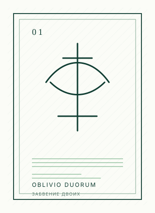

Openbook · branching edition
Зелёная дверь
Научно-футуристический цикл о том, что делает человека настоящим в мире, где почти всё можно заменить.
- 07
- книг в дуге
- open
- публикация на GitHub
- fork
- ветвящийся контейнер
De vita vera
Если жить можно почти вечно, что делает жизнь настоящей?
«Зелёная дверь» — не антиутопия и не техно-манифест. Это серия романов о личности, памяти, выборе и человеческом достоинстве в будущем, где люди научились продлевать жизнь, менять тела и всё дальше отодвигать границы естественного существования.
Сквозной образ серии — дверь: граница между возможностью и решением, между улучшением и потерей себя, между сохранённой памятью и удобной заменой.
Editio aperta
Открытое издание как ветвящийся контейнер
Эта публикация устроена не как закрытая витрина с единственным «правильным» файлом, а как контейнер: внутри него могут жить исходники, Markdown-версии, обложки, заметки, ветки чтения и производные траектории.
Официальный ствол сохраняет авторскую версию цикла.
Ветви позволяют читать, обсуждать, пересобирать формат и писать собственные продолжения без подмены оригинала.
Контейнер важнее одной страницы: репозиторий становится формой издания.
Libri portarum
Книги цикла
Карточки сделаны как высокоключевые лайнарт-обложки: много белого пространства, тонкая графика, один знак на книгу.
Forma non clausum
Почему это именно контейнер, а не просто сайт
Обычный лендинг сообщает: «вот книга». Ветвящийся контейнер говорит: «вот пространство, где книга существует вместе со следами её сборки, чтения и возможных ответвлений».
-
01
Исходники рядом с изданием
Репозиторий хранит не только рекламную страницу, но и материалы цикла: тексты, обложки, Markdown и служебные документы.
-
02
Ветвление без присвоения
Можно писать продолжения и альтернативные маршруты, но нельзя выдавать производную версию за официальную авторскую.
-
03
Чтение как навигация
Цикл можно проходить линейно, по книгам, или как архив: возвращаясь к образам, темам и узлам.
Quomodo legere
Начать с двери или с первой книги
Самый естественный маршрут — открыть общий репозиторий цикла, затем перейти к первой книге. Если нужна законченная точка входа в уже оформленное издание, начните с отдельного репозитория «Oblivio Duorum».